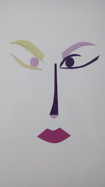
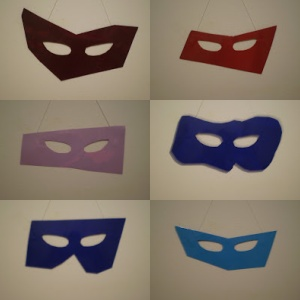

Junho 2017
Ela
Maio 2017
Marias
Abril 2017
Marias Crianças

Marias
Carregam odores das plantas.
Carregadoras de alfazema e lavanda ... é um tipo de energia que as plantas fornecem com a característica de ser elevada, sutil, celeste, portanto. propriedades vitalizantes para o corpo e para a alma. A fitoenregia apresenta um padrão vibratório amplamente curativo e amoroso, peculiar das esferas mais evoluídas dos planos superiores. A fitoenergética é um sistema natural de cura.
Gimenes,Bruno J.,Fitoenergética A energia das planas no equilíbrio da alma, Luz da Será Editora
Marias Odores
Marias SOS
Março 2017
Casa Rosa Mística
Presente para a Casa Rosa Mística
Kit Arte
Fevereiro 2017
O Carnaval
Bastidores
As Quatro Marias
As Três Marias
Ciranda no bastidor
Novembro 2016
Eu e minhas obras
Carregadoras de Sorte
Vinil adesivo, folhas de planta seca (trevo de quatro folhas) e plástico Cristal.
O Suporte da OBRA é o Bastidor ... de madeira, metal ou plástico.
Ciranda e Rodas
Eu e os meus botões... Brinquei de roda e cantei muitas canções de...
"A Ciranda é uma dança comunitária que não tem preconceito quanto ao sexo, cor, idade, condição social ou econômica dos participantes, assim como não há limite para o número de pessoas que dela podem participar. Começa com uma roda pequena que vai aumentando, a medida que as pessoas chegam para dançar, abrindo o círculo e segurando nas mãos dos que já estão dançando. Tanto na hora de entrar como na hora de sair, a pessoa pode fazê-lo sem o menor problema. Quando a roda atinge um tamanho que dificulta a movimentação, forma-se outra menor no interior da roda maior." Fonte: Wikpédia.
O ateliê no dia 04
...um botão foi encotrado no ateliêr!

A ilha do e no ateliê...minha ILHA
Caras
Taças

Eu/Galeria/Ateliê/Casa
Setembro 2016
Mulher Azul
Construidos
Botões

O botão é um objeto usado em peças do vestuário para ajustar as roupas ao corpo em determinada posição e também por motivos estéticos, tem o formato normalmente redondo. Forma material dimensão estão para diversos modos ou moda. O botão é utilitário e depende do tecido ou pano. Ele fecha a peça do vestuário prendendo numa casa ou presilha.


...Eu e os meus botões...um botão.

Agosto 2016
Eu e os meus botões...
"Ao nascer
estamos dependentes,
depois
alguém pode depender de nós
podemos
acostumar e criar dependências
coragem
para não criar dependentes
então
incentivamos à independência"
"Iara S R Pontes"
Caras
Encaras ?
Forma...medida...
Suporte para vasos

Movimento
Na cor dos chacras
Sem agua

Dancarinas
Dezembro 2013
Lelas
Março 2013
A cor dos chacras


Janeiro 2012
Para Lú mascaras por encomenda
Abril 2011
Encomenda mascaras para festa casamento Nanda e Leandro
Setembro 2010

Junho 2010


Maio 2010


Abril 2010

Dezembro 2009


Novembro 2009


Dezembro 2008
Novembro 2008
Imãs
O material utilizado
-Manta magnetica e papeis coloridos de vinil adesivo.
-Recortamos em diversas formas.
Material de Opoio
-Prateleira metalica na cor branca